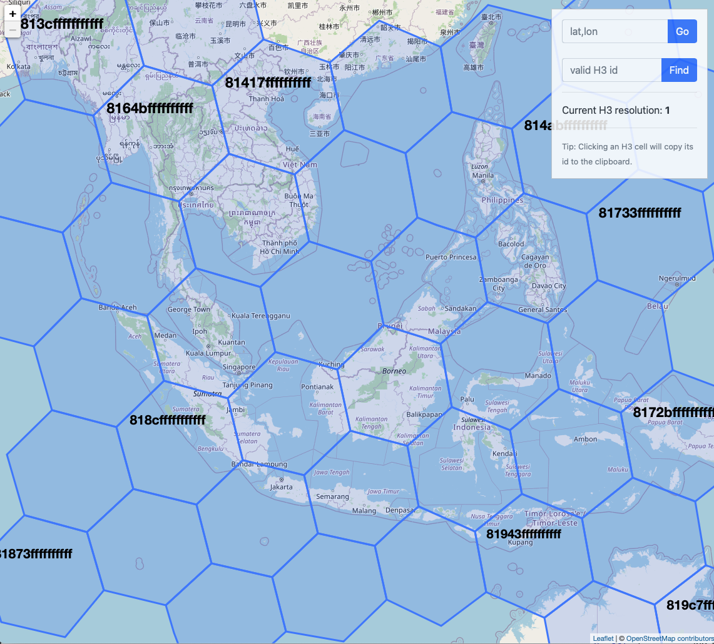

Project ideas
The following are ideas for projects for 2023-2024. If you have your own idea then feel free to discuss that as well. If you have an idea that you want to work on it would be useful to be able to describe it along the lines of the projects below, i.e., what is the idea, what are the questions you want to ask, what is the outcome, and what skills are needed.
My main research interests are exploring and visualising information of biodiversity. I am interested in maps, evolutionary trees, taxonomy, museums, artificial intelligence, etc.
BBC Wildlife meets ChatGPT

A while ago the BBC had a rich web site full of details about species that featured in their wildlife programmes. This site is now dead, but I grabbbed the data and made a crude demo here. Given growing interest in the use of artificial intelligence I would like to see if we can use ChatGPT to create a useful guide to the biology of species covered by the BBC.
Questions
- For the BBC species how reliable is ChatGPT in providing information?
- Can this reliability be improved by adding data from the BBC web site (e.g., on diet, location)
Approach
Get a list of species from the BBC site, and a list of their features (e.g., ecology, behaviour, etc.). Develop queries to ask ChatGPT (e.g., "is species x a predator?"), measure how accurate it is. Then seed with BBC data and ask questions again, measure change in accuracy.
Outcomes
The outcome would be a measure of how accurate ChatGPT is by itself (e.g., how many facts does it get wrong?), and a measure of whether adding BBC data improves it. Could potentially be used as the basis of a quizz (e.g., "which of these species are monogamous?"). Could also be extended to other sources, for example can we also add information from Wikipedia (in multiple languages), can we add scientific papers, etc.?
Skills
ChatGPT is easy to use, we would need to extract the BBC data into a more useful form so that it can be feed to ChatGPT (I can do that). No programming is needed, but if you have programming skills then could explore further applications, such as making a Q&A site.
How can Uber help us map biodiversity?

GBIF provides (literally) billions of observations on where species are found, but the maps based on this data are highly biased, and display numbers of observations, not numbers of species. Hence GBIF doesn't tell us hwere the greatest species richness is, just where the most data comes from.
There are interesting techniques for taking uneven sampling into account, such as ES50 (see Exploring es50 for GBIF) that should be explored further. There is also a new method for standardising geographic data called "hex tiles" (see Your Guide to Our Next-Gen Geospatial Tile System) which cover the planet in a grid of equally sized hexagons (and a few pentagons). There are different ways to do this, but the system that seems to be most popular is based on work by Uber (yes, that Uber).
Questions
- Can we build a biodiversity map that shows numbers of species not numbers of observations?
- How easy is it to build a map using H3?
- Can we compare diversity across taxa (e.g., mammals versus butterflies), or based on different data sets (e.g., DNA barcodes)?
- Can we measure the amount of sampling in each area?
Approach
This study will be data intensive, so likely to start with a smallish dataset to explore how easy it is to assign observations to H3 tiles, and what level of tile works best (you can explore H3 tiles here). Once different datasets have been mapped onto the same set of tiles we can compare then (for example, is the number of species in each tile in one taxon correlated with those in another?).
Outcomes
The outcome would be interactive maps of biodiversity (e.g., showing species richness for reptils or other groups). There would also be comparisons between taxa, and comparisons between sampling effort (number of observations) and diversity (number of species).
Skills
If you are familiar with R there are packages that support H3. Otherwise we would need code to get data from GBIF and sort it into tiles (I can do this).
Mapping taxonomy: where are the museums and where are the taxonomic journals?

Taxonomy is a science that often feels embittered and under appreciated, despite its importance in cataloguing biodiversity. We lack a lot of basic details about the state of taxonomy, in particular where it is done, and where it is published. Is it concentrated in rich countries, of is it more widley spread? Is it mostly closed and behind a paywall, or is a lot of it open access. How does the distribution of taxonomic journals compare to other disciplines, see e.g. Recalibrating the scope of scholarly publishing: A modest step in a vast decolonization process.
Questions
- Where in the world are the major natural history collections?
- Where in the world are the major taxonomy journals?
- Is the distribution of museums, herbaria, and journals correlated with each other?
- Is the distribution of museums, herbaria, and journals correlated with biodiversity? (i.e., do biologically rich countries also have museums and taxonomic journals?)
- How many taxonomy journals are open access?
- What languages is taxonomic work published in?
Outcomes
A global overview of the distribution of museums and herbaria, the distribution of taxonomic journals, a measure of how many are open access, and what languages they publish in.
Skills
Most of the data for this study would come from Wikidata. There is likely to be a lot of missing data, so this would need to be added. Wikidata has a powerful query language that cna be used to find museums, plot maps, etc.
Where are the new species being found?
My BioRSS project monitors journals for new species, and classifies the papers by taxonomic group (e.g., "Insecta") and country (e.g., "China").
Last year a student did this project for 2022. This would be an opportunity to do it for 2023, and also improve on the previous work.
Questions
- In which country are the most species found?
- For which taxonomic group are the most species found?
- How many papers are actually about new species? Can we determine that from the title? This may require some machine learning
- How many of the new species descriptions are Open Access?
- Where are the people who do taxonomy based? Are they in the same country as the new species?
- Who is funding taxonomy?
- How do these results compare to 2022?
Outcomes
A survey of the new species found in 2023, their geographic and taxonomic distribution, and an understanding of who is doing that research, where they are based, and who funds them.
Skills
The data will be provided, will need to be analysed with some standard techniques (spreadsheets and/or R).